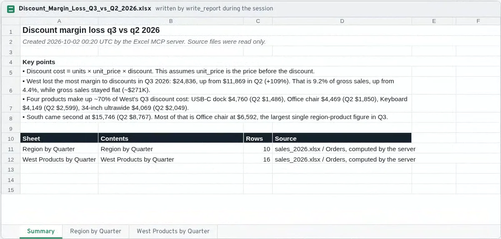

Claude answers questions from your Excel files, and cannot change them
I asked Claude a business question about a 2,000-row sales workbook. Using only the tools of this MCP server, it answered in 30.5 seconds with 8 tool calls and saved an Excel report. A separate check of 26 claims in its answer found 25 right and one wording slip: it calls a 42% share "most".
The question
Using the Excel tools: which region lost the most margin to discounts last quarter (Q3 2026), and how does that compare with Q2? Name the products behind it. Then save a short Excel summary report. Keep your answer short.
Claude's answer (unedited)
West lost the most margin to discounts in Q3 2026.
- Q3 vs Q2: West's discounts cost $24,836 in Q3, up from $11,869 in Q2 (+109%). Gross sales stayed about the same (~$271K), so discounts went from 4.4% to 9.2% of gross sales.
- Products behind it (these four are ~70% of West's Q3 discount cost):
| Product | Q2 | Q3 |
|---|---|---|
| USB-C dock | $1,486 | $4,760 |
| Office chair | $1,850 | $4,469 |
| Keyboard | $2,599 | $4,149 |
| 34-inch ultrawide | $2,049 | $4,069 |
- Runner-up: South had $15,746 in Q3, up from $8,767. Most of it is Office chair at $6,592, the largest single region-and-product figure in Q3.
I calculated discount cost as units × unit_price × discount, which assumes unit_price is the price before the discount.
The report is saved at reports/Discount_Margin_Loss_Q3_vs_Q2_2026.xlsx. It has a Summary sheet, a region-by-quarter table and a West product-by-quarter table.
Check: 25 of 26 claims hold (numbers, names, method and report file). Underlined, one wording slip: Office chair is $6,592 of South's $15,746, which is 42%: the largest part, but not "most of it". The report's last key point repeats it.
What Claude did
list_filesList the files in the data folder
→ 2 files: returns_2026.csv, sales_2026.xlsxlist_sheetsfile: sales_2026.xlsx
→ Orders (2,000 rows), Products (8 rows), Regions (5 rows)describe_sheetfile: sales_2026.xlsx · sheet: Orders
→ Orders: 2,000 rows; columns order_id (text), date (date), region (text), product (text), units (integer), unit_price (number), discount (number)describe_sheetfile: sales_2026.xlsx · sheet: Products
→ Products: 8 rows; columns sku (text), product (text), category (text), list_price (integer), unit_cost (number)querygross = units × unit_price · discount_cost = gross × discount · date between 2026-04-01 and 2026-09-30 · group by region, date:quarter · sum of discount_cost · sum of gross · sort region, date
→ Error: Unknown sort column 'date'. Available columns: region, date:quarter, discount_cost, gross_sales.querygross = units × unit_price · discount_cost = gross × discount · date between 2026-04-01 and 2026-09-30 · group by region, date:quarter · sum of discount_cost · sum of gross · sort region, date:quarter
→ 1,363 orders matched → 10 result rowsquerygross = units × unit_price · discount_cost = gross × discount · date between 2026-04-01 and 2026-09-30 · group by region, product, date:quarter · sum of discount_cost · sort -discount_cost
→ 1,363 orders matched → 80 result rowswrite_reportname: Discount_Margin_Loss_Q3_vs_Q2_2026 · 2 tables, computed by the server from a query · 4 key points
→ Saved reports/Discount_Margin_Loss_Q3_vs_Q2_2026.xlsx with sheets Summary, Region by Quarter, West Products by Quarter
One call failed on a wrong sort column. The error message listed the valid columns, and Claude fixed it on the next call.
The report it saved

The 6 tools
list_files: the Excel and CSV files in the folderlist_sheets: sheets with row and column countsdescribe_sheet: columns, types, empty cells, 5 sample rowsread_rows: raw rows, pagedquery: filters, groups by month or quarter, sums and averages, simple computed columnswrite_report: saves a new formatted .xlsx with a summary sheet
Safety
- Reads one folder only.
../, absolute paths, hidden files and links that lead outside are refused. - Source files are never changed. Tests check their hashes before and after.
- Reports are always new files. Nothing is overwritten.
- No code runs: fixed lists of filters and calculations, no eval, no formulas.
- Limits on file size, rows loaded and rows returned per call.
- Clear error messages, so Claude can fix its own mistakes.
Built for Claude Desktop and Claude Code
It is a standard MCP server (stdio). The session above was recorded in Claude Code. Claude Desktop starts it with the same command from its config file.
claude mcp add excel -- /path/to/.venv/bin/mcp-excel --root /path/to/excel-folder --out /path/to/reportsSynthetic data generated for this demo: 2,000 orders from January 1 to September 30, 2026, 8 products, 5 regions. All names and numbers are invented. Session: Claude Code 2.1.287, Claude Opus 5.5. Built with Python, the official MCP Python SDK (tests pass on versions 1.30.0 and 2.2.0), pandas and openpyxl. 3 sessions saved: run-1 failed on my setup (the server did not connect), run-3 found the same main figures but wrongly said the data has no cost column; this page shows run-2. Video: a replay built only from the saved session files (59 s, no sound). Code available on request.